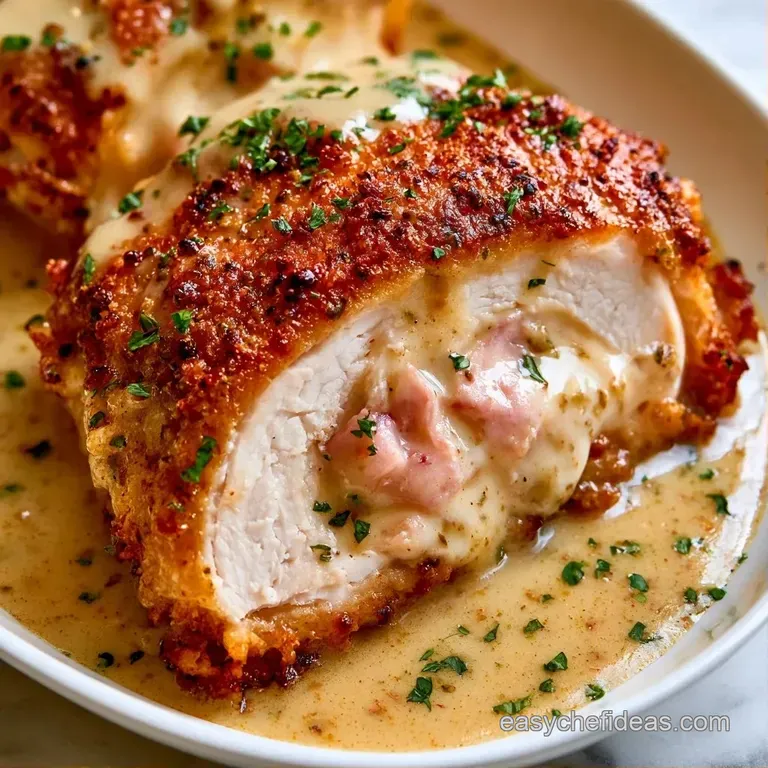

Cordon Bleu Recipe
Home

Description
Cordon bleu is a French-style dish of chicken breast stuffed with ham and Swiss-style cheese (Gruyère or Emmental),
then breaded and fried or baked until golden. The name means “blue ribbon” in French, and the dish is widely associated with Swiss and French cooking.
The result is a crisp, crunchy exterior with a juicy chicken center and melted cheese inside. It’s typically served with potatoes, fries, or a simple salad.
Ingredients
- 2 chicken breasts
- 4 slices cooked ham
- 4 slices Gruyère or Emmental
- 1/2 cup flour
- 1 egg
- 1 cup breadcrumbs
- Salt and pepper
- Oil for frying
Steps
- Slice each chicken breast, pound it flat. Season it
- Layer 2 slices of ham and slices of cheese on one half of each breast
- Dredge in flour, dip in the beaten egg, then coat in breadcrumbs
- Fry in medium-hot oil for 4-5 minutes per slide until golden
- Rest for 3 minutes and serve